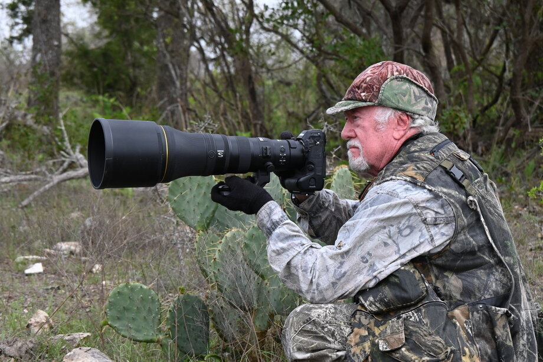

Nature, landscape & architectural photography
of the Texas Hill Country

Paul E. Stafford has traveled the world many times, producing documentary films, shooting tens of thousands of still photographs and arranging high-level special events. Although most of his career was devoted to documenting offshore oil and gas construction activities, he became fascinated with wildlife and nature photography in the early ’70s.
After 42 years with one company, he retired as Director of Communication Services and furthered his career in the industrial arena as Vice President of a major film, video and graphics firm in the New Orleans area. Since his retirement, his interest has focused on nature, landscape and architectural photography.
He and his wife, Fay, moved to Kerrville in the hill country of Texas in April of 2005 to further their pursuit of capturing the outdoors on film.
Enter the Gallery →